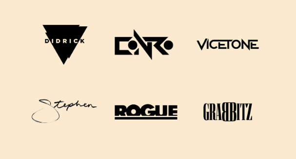

Monstercat: Instinctul este unul dintre cele două amprente ale muzicii canadiene Monstercat. În contrast cu Monstercat: Uncaged, Instinct se concentrează în primul rând pe muzică "vibrantă", "emoțională" și "melodică". Eticheta a publicat noi melodii pe două săptămâni în zilele de marți și vineri.
